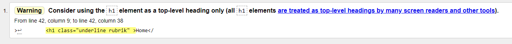
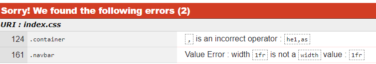
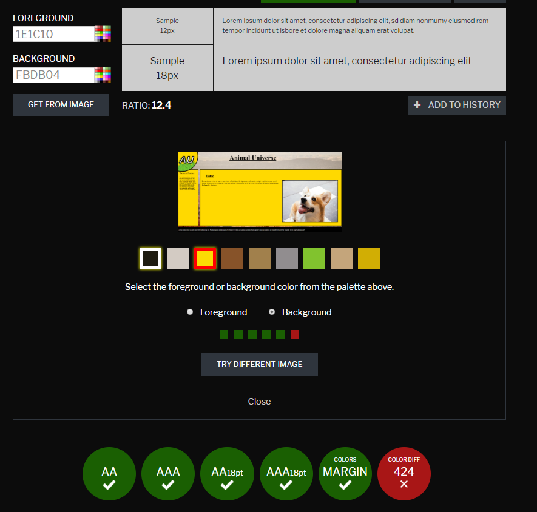
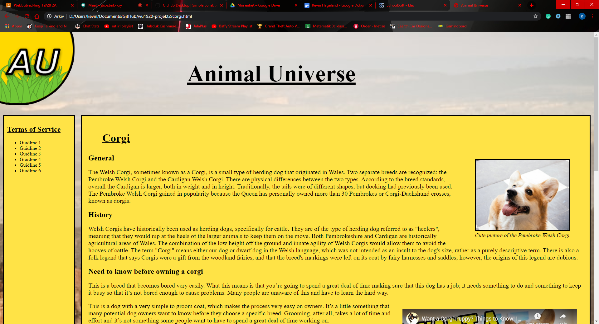
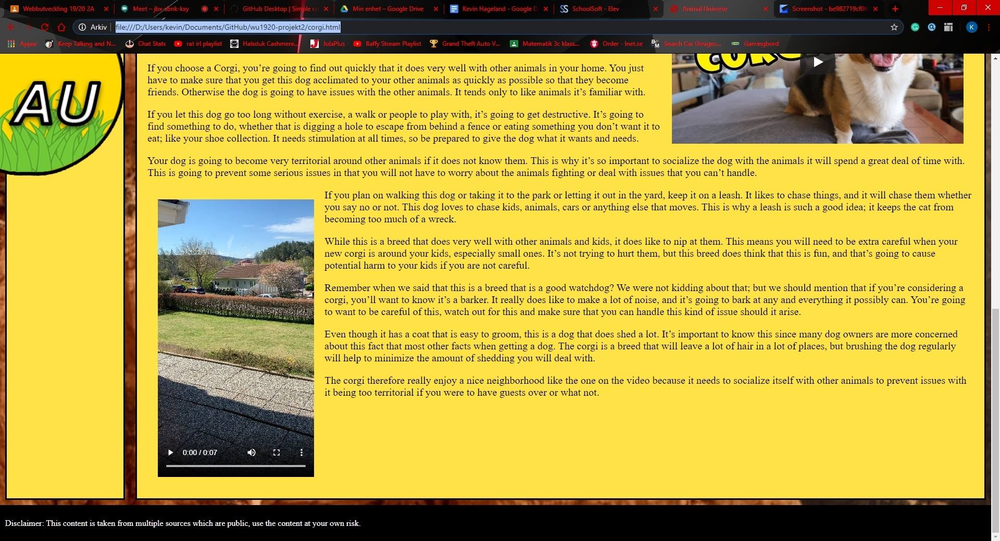
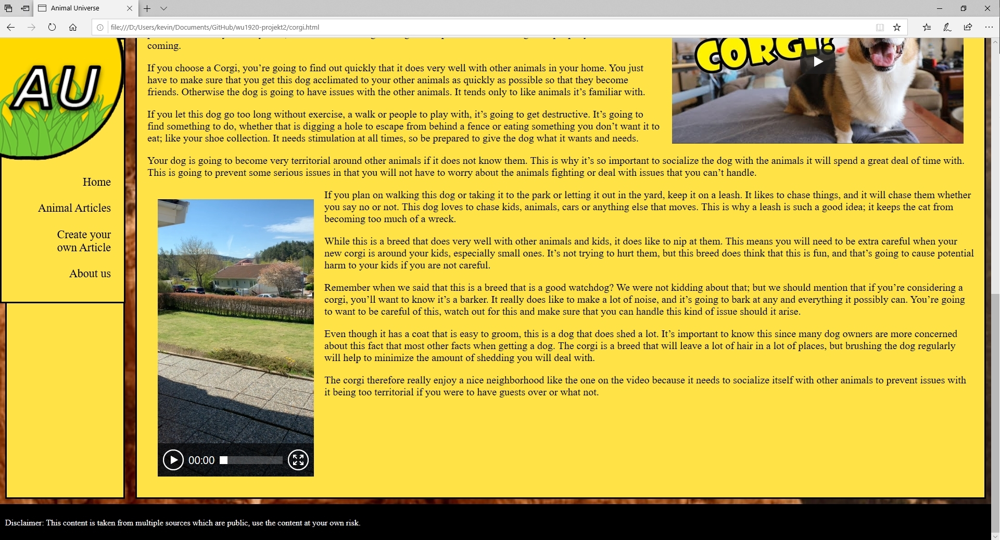
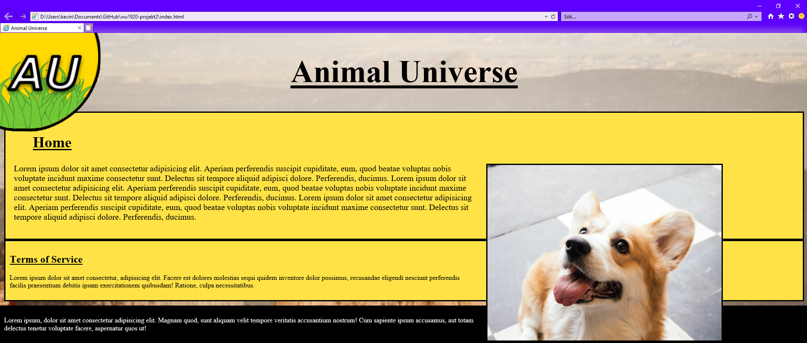
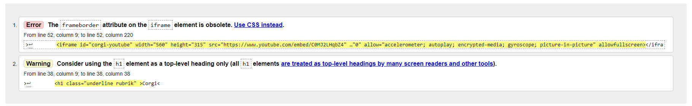
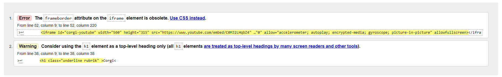

Jag ska skapa en hemsida vid namn "Animal Universe" för att sprida intresseveckande information för olika djurraser runt om i världen. Jag riktar mig åt en målgrupp som är intresserad av att lära sig utan att läsa igenom sido-långa Wikipediasidor med komplicerad och svårförstålig fakta. Därmed blir målet med min sida att skapa en sido med kort, konkret, intressan och relevant fakta med hjälp av ett fåtal konsekventa rubriker för varje djur med ett specifikt syfte. Exempelvis en "Fun fact" rubrik med syfte att väcka humor och intresse i texten.
he: Header, as: Aside, ar: Article, fo: Footer.
"when logo press" / "logo button press": Nav kommer ner, liknande hamburgarmeny.
Skala i fr längst ner på varje skiss (kan komma att ändras)


| Vecka | På lektionen | Utanför lektionen |
|---|---|---|
| 4 |
|
|
| 5 |
|
|
| 6 |
|
|
| 7 |
|
|
| 8 |
|
|
| 9 |
|
|
| 10 |
|
|
| 11 |
|
|
| 12 |
|
Idag har jag kommit på min idé och skrivit motsvarande Idébeskrivning samt fyllt i Schemat, jag hann dessutom påbörja skissen av min websida. Dagens lektion har inte varit särskillt komplicerad och har därför inte stött på någon problem. Däremot tog det sin tid att komma på en idé och hann därför inte särskillt långt på min skiss.
Jag har idag lyckats att färdigställa mina handskisser för att sedan påbörja mitt index i Visual Studio Code. I VSC hann jag med att skapa ett fungerande grid med förhållandet 1fr 3fr 1fr för att matcha min skiss och än så länge passar måtten in väl. Jag hann dessutom skapa en klass för texttyper som ska vara "Underlined". Nästa steg är att skapa loggan i Photoshop som ska ligga uppe i vänstra hörnet och sedan fortsätta att ge den en funktion med hjälp av JavaScript så att den agerar som en hamburgarmeny. Därefter behöver jag fylla på resterande information och hitta non-copyright bilder som jag kan använda mig av. Det sista jag kommer behöva göra är en footer, som jag inte vet vad jag ska ha i än.

Idag är jag i stort sätt klar med mitt index samt skapat en logga i Photoshop. Loggan gjorde jag genom att skapa en ifylls cirkel och placera den i uppe, vänstra hörnet. Därefter lade jag till initialerna för Animal Universe, det vill säga AU och gav den blendingsoptions i form av en "linje" för att skapa en ramliknande effekt på cirkeln som dessutom hade en annan färg än texten själv. Sedan lade jag till en PNG med tecknat gräs (som jag fick tag på genom att filtra google bilder efter bilder som man får använda och redigera. Jag placerade bilden på cirkeln för att sedan "ritstiftet" för att markera delen som skulle befinna sig i cirkeln. Sist lade jag till ett nytt lager som jag målade detaljer i form av färger eller liknande som saknades efter att jag croppade gräsbilden efter cirkeln. Planen för loggan kommer senare att fungera som en hamburgarmeny, vilket jag siktar efter att jobba på nästa lektion. I övrigt har jag gjort en aside och article med backgroundcolor (samma som loggan) samt boarder till respektive. I övrigt har jag lagt till en svart footer som är placerad längst ner på sidan samt bytt bakgrunden till en image istället för en ren färg.

Idag fixade jag en knapp med animation som fungerar på min PNG-logga med hjälp av att skapa ett flertal div's och sedan skapa animationen med JavaScript som i sin tur skapar en "change"-klass som sedan ändrar positionen på NAVen. Däremot har jag nu istället ett problem med hur loggan och NAVen (knappen) inte skalar jämnt med övriga delar av sidan. Det är vad jag ska jobba på att lösa nästa vecka.
Jag lyckades idag fixa knappen samt ge elementen i Naven en animation när man hoverar över dem. Jag fixade knappen genom att sätta en fast width och sedan ändra widthen med mediaquaries som jag började på efter det att jag färdigställde knappen och dess funktion. Nästa vecka kommer jag att förhoppningsvis färdigställa index.


Idag lyckades jag till slut få klart mitt index och är på god väg att avklara min andra sida. Jag fördigställde mitt index genom att fixa till footern genom att ta bort width=100% (för att den inte skulle fylla ut mer än bredden på skärmen då jag har en padding i footern) samt att jag tog bort position=absolute så att den lade sig längst ner. Sedan har jag även lagt i text och bild i min article och använt mig av float för att placera bilden på höger sida av min article. På min nästa sida "animal articles" har jag skapat ett grid area i min article för att kunna lägga items som jag skapat med hjälp av div. Jag skapade gridet genom att skapa en ny klass för den nya sidans body. Nästa gång ska jag se till att alla mina items läggs på rätt platts samt att gridet börjar under titeln istället för att ta upp hela article'n.


Till slut lyckades jag färdigställa alla mina sidor utan vidare problem idag! Det som eventuellt hade kunnat läggas till är passande text under de olika delarna då jag i nuläget endast har kort loremtext, däremot anser jag att det är onödigt arbete som inte har med projektet självt att göra och bidrar inte till att. Exempelvis är indexsidan näst identisk till corgi.html samt about-us.html då skillnaderna brukar utges i textinnehållet. Däremot för att göra create-your-own-article.html lite mer avancerad så lade jag till en knapp med en funktion i .js för att inte vara så repeditativ. Problemet jag avslutade med förra veckan löste jag genom att göra mitt grid-area till specifika delar för de olika elementen: "di1 di2" osv. Sedan för att lägga gridet under rubriken fixade jag enkelt genom att istället för att använda mig av klassen för body'n samt articles för sidan, så använder jag istället klassen för body'n samt klassen för alla inre articles (.div-grid i index.css). I övrigt har jag inte gjort mycket annat som är komplicerat, mestadels tagit kod från mina andra sidor för att skapa de sista som jag hade kvar. Screanshots för mobil och desktop finns under Utvärdering.
Den enda skillnaden mellan google och firefox som jag kunde hitta på min websida var det att animationen när man hoverade över ett objekt på navbaren (i hamburgarmenyn) där firefox inte anpassade animationen efter antalet rader som texten tog upp, medan den gjorde det på google. Därmed kanske hur saker "spannar" eller breddar ut sig i firefox är annorlunda eller liknande? Däremot kunde jag inte hitta direkt information på problemet när jag googlade om det. Gällande hur jag lyckades med sidan för mobil så anser jag att jag lyckades bra som på nedanstående bild. Jag kan inte hitta några direkt problem med min mobilsida.

För min HTML validering var det enda "problemet" hos alla mina html-filer att jag hade använt h1 som en operation annat än huvudtiteln på sidan, vid vidare eftertanke kunde jag mycket väl istället använt mig av h2, men jag ansåg att jag då istället hade behövt använda en rad css kod till att ändra min text size, vilket jag kände var onödigt vid tillfället som jag skrev koden. Därmed för syftet att läsa koden och så vidare, kommer jag att använda h2 till underrubriker vid senare tillfällen. Angående min css validering hittade jag två stycken onödiga rader som inte påverkade resultatet och som jag snabbt kunde ta bort. Den första var hur jag ville min nav skulle navbar samt hamburgarmeny skulle lägga sig i mitt grid area, men eftersom jag senare valde att sätta en bestämd width för att lösa mina problem på ett enklare sätt som är skrivet i dokumentationen behövdes detta inte längre. Samma sake gällande mitt andra problem som handlade om hur man inte kan använda fr i width, vilket jag nu då vet, men eftersom jag senare använde en bestämd width i pixlar hade jag inte tidigare märkt av detta.
 Vid kontroll av kontrastskillnader mellan text och bakgrund ansåg den att min color difference inte är tillräckligt hög, däremot när man håller över den hänvisar den till att sätta på gråfiltret som är längst upp på bilden nedan, där man kalrt tydligt fortfarande kan se en skillnad på text och bakgrund. Man hade självklart kunnat ändra till en liknande nyans men enligt mig själv är det inget supernödvändigt i nuläget.
Som helhet vill jag påstå att projektet gick hyfsat bra, men samtidigt hade det kunnat ha blivit mycket bättre. Varför det gick mindra bra va till störst del på grund av att min planering inte stämmde överens över huvud taget, det eftersom jag satt fast på att skapa en hamburgemeny i cirka 3 lektioner, då jag enligt min planering skulle arbeta på min tredje sida när jag istället var fortfarande kvar på min första. Däremot eftersom den stora skillnaden hade varit innehållet (i text) på sidorna så gick de andra sidorna extremt snabbt att skapa då jag använde mig av den samma css som på index-sidan. Därmed ska jag ta större hänsyn till hur mycket längre tid den första sidan kommer att ta till skillnad emot de andra inför nästa projekt. Självklart kommer detta att variera från vilket projekt du håller på med, men genom att arbeta på detta sätta kan jag tydligare sätta upp konkreta mål för mig själv med vad jag ska vara klar med för varje vecka för att bli klar i tid. Någonting jag inte kunde uppfylla med detta projektet då jag låg så extremt långt bakom som jag senare kunde ta igen på extremt kort tid. 6Jag tycker däremot att mitt största problem var websidan jag valt att skapa eftersom den inte hade något konkret syfte och blev därmed väldigt flummig och kändes samtidig ofullständig även när sidan var klar. Däremot finns det både positiva och negativa aspekter med detta. Det positiva var att jag kunde fokusera allt mer på att lära mig allt fler funktioner som flexbox, när man ska använda "float" och så vidare, samt att jag inte behövde känna sig stressad av att slutföra en komplett hemsida som möter dagens standard. Nackdelen var däremot som tidigare benämnt att jag inte hade ett klart mål om vad jag vill uppnå med sidan eller att det inte kännts som att jag färdigställlt min hemsida. Men eftersom jag i dagsläget kan allt mer om hur man ska koda hemsidor hade det vart extremt kul om jag istället blivit tilldelad en uppgift med mer klara mål inför nästa projekt där jag kan arbeta efter ett allt tydligare mål. Någonting som kunde dessutom förbättrats i min arbetsprocess är att jag istället börjar med skapandet av mobilsidan för att sedan bygga vidare mot desktop då jag i detta projektet gjorde det åt andra hållet.I mitt fall gav det mig inga problem över huvud taget, men däremot vet jag nu att det underlättar och är mindra chans att man möter problem senare i processen om man istället börjar med mobilsidan.
Jag har nu uppdaterat min corgi artikel till att bli mer komplex med flera underrubriker, bildtext där jag använt mig av "figure" men även lagt in videoklipp från youtube med hjälp av en "iframe" samt ett eget videoklipp med hjälp av "video".
 Tidigare har jag provat min hemsida på firefox där jag inte märkte någon större skillnad mer än att animationen skiljde sig lite när man hoverade över texten i hamburgarmeny. Jag har nu läst att det är på grund av att ":after" spannar annorlunda från hur google gör det. Däremot är jag inte helt säker på hur man löser mitt problem då andra med liknande problem har löst det på annorlunda sätt som inte applicerar på mitt problem. Det eftersom en till exempel hade använt sig av inline, och kunde därmed lösa det med inline-block vilket inte fungerar på mitt textelement. Om man anser det som ett problem och skulle vilja publicera hemsidan så är det antagligen ganska så lätt att lösa efter att man söker runt ett litet tag då jag vet att det beror på ":after" till min animation.
Jag har nu dessutom testat min hemsida i Microsoft Edge då det är Microsofts nyaste webläsare (Januari 2020) och är som fortfarande baserad på deras tidigare Internet Explorer till utseendet. Min kod har inte haft några problem med denna nya webläsare och verkar därmed anpassat sig mycket till modern teknik likt google då båda webläsare klarar av grid-areas och flexsystem, saker som jag sett internet explorer har haft dålig anpassning till vilket man ser på bild 2 här nedan. Den största skillnaden jag kan hitta är att Microsoft Edge använder en annan mediaplayer, vilket är någon som visserligen firefox också gjorde.
 Eftersom jag nämnde att jag lätt kunde ändra kontrasten på bakgrunden jämtemot texten så gjorde jag det och här är de nya resultaten.


Eftersom jag nu har lagt till mer kod, mer specifikt inom corgi.html så krävs nu en ny validering av min html och css som vi ser nedan. Den första bilden är för min css, den andra för corgi.html och den tredje för övriga html-sidor.
 


Här ser vi att min css validering är perfekt eftersom ingenting hittaded, dessutom gäller självklart samma "problem" när jag använder h1 istället för h2 och därmed h2 där jag bör använda h3 fortfarande i övriga html sidor vilket man löser genom att byta css'en för h1, h2 och h3, vilket däremot är ganska tidskrävande.I min nya corgi.html hittades dessutom att jag använt mig av "frameborder=0" vilket tar bort en liten border som annars lägs på iframen vilket beror på att det är html koden jag tog ifrån youtubes delningsfunktion som därmed innehöll både width, height och frameborder i html'en istället för att skriva det separat som en css, vilket man självklart bör göra för att kunna anpassa hemsidan med mediaquaries och generellt för att hålla all typ av css-kod på ett ställe för att kunna hantera hemsidan lättare. Därmed lade jag in width och height samt "border: 0;" i ID't som min "iframe" redan hade och tog bort det ur html'en. Samma problem hittade jag dessutom längre ner i html'en där jag använt width till min "video" och gjorde därmed samma lösning där. Den nya valideringen ser vi här nedan och kan därmed konstatera att jag löst problemet då det enda som kvarstår är felanvändandet av h1 som jag tidigare nämnt.